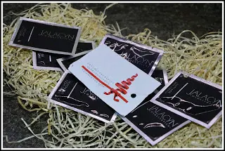
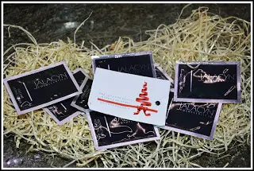
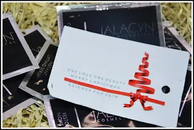

skincare - JACALYN COSMETCEUTICAL
La skincare è una cosa importante per la cura della propria pelle. Io infatti, dedico molta attenzione ad essa.
La cosa che mi ha colpita in modo particolare del prodotto, è stato il fatto che già dopo la prima applicazione ho notato una pelle davvero idratata.
Parliamo di un'azienda di Torino JACALYN COSMETCEUTICAL.
In realtà sono in forte ritardo sulla scala delle mie collaborazioni, ma poiché ho avuto il piacere di ricevere dei campioncini, ho voluto provare ogni campioncino a periodi in modo tale che potessi vedere le varie fasi e in diversi momenti.


Con i giorni ho provato tutti i campioncini ed è sempre stata all'altezza del tempo. Ovvero, ho provato questa skin stando in casa ed avevo una pelle vellutata.
L'ho poi provato anche prima di uscire, in un periodo invernale davvero freddo, ed è stato un alleato per la secchezza.
Ringrazio l'azienda per avermi permesso di conoscere un prodotto valido ed efficace per la routine sulla skincare, adoro provare e testare nuovi prodotti ,ancor di più se ne resto soddisfatta.

Un prodotto amico della pelle per una skincare perfetta!
“Abbi buona cura del tuo corpo, è l'unico posto in cui devi vivere.”
JIM ROHN